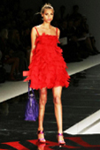
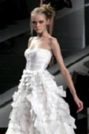
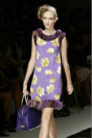
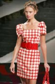
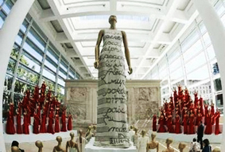
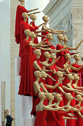

Il Made in Italy sul catwalk
www.daniele_blog.it/Il Made in Italy sul catwalk
Valentino, un genio della moda italiana
Valentino è uno dei più importanti stilisti e grandi nomi della moda italiana. Ha dedicato tutta una vita alla bellezza e al fascino femminile. Lo stilista è un ambasciatore d'eccellenza nella promozione dell'alta moda italiana a livello internazionale. La sua storia rappresenta l'essenza del Made in Italy. |
    Adapted and reproduced |
Articoli sullo storico avvenimento
- Valentino festeggia 45 anni di carriera
- Roma si veste di rosso e celebra il genio di 'V'
- Per maggiori dettagli dell'evento visita www.valentino.it, seleziona Valentino 45th anniversary.
Informazioni: stilista, creazioni, casa Valentino
Link utili per approfondire l'argomento

Valentino festeggia 45 anni di carriera
Listen to the audio about the milestone event in Valentino’s fashion career and answer the following questions in English.

Adapted and reproduced with the permission of Fashionblog.it.
- How long has Valentino Garavani been absent from the capital, Rome?
17 years. - What has brought Valentino back to the capital?
The celebrations in honour of his 45 year fashion career. - Why do you think Rome is important to the development of his career?
It's where he set up his first atelier in 1960. - Make a note of the way in which Valentino has created a status symbol for il marchio Made in Italy.
He has created clothes for famous celebrities.
Clicca qui to check the answers.
Roma si veste di rosso e celebra il genio di 'V'
Read the following article, then complete the attività that follows.
Roma si veste di rosso e celebra il genio di 'V'
di ALESSANDRA VITALI
ROMA - È la celebrazione della bellezza e del talento, dell'estro di un uomo partito da lontano e arrivato ai vertici massimi della sua arte. Quello che Roma dedica a Valentino per i 45 anni di carriera è un omaggio al genio. La capitale si veste di rosso per una serie di eventi d'eccellenza che animano alcuni dei luoghi più prestigiosi della città.
Questa mattina inaugurazione di 'Valentino a Roma: 45 Years of Style', mostra spettacolare all'interno dell'Ara Pacis. In serata, cena di gala al Tempio di Venere, al Colosseo, ricostruito e allestito, come in un film, da Dante Ferretti, scenografo tra i più importanti del mondo.
Sabato 7 luglio, pomeriggio, lo stilista sfila a Roma dopo diciassette anni (con la collezione Alta Moda autunno - inverno) e sceglie il Complesso monumentale di Santo Spirito in Sassia. La sera, ballo di gala al Parco dei Daini di Villa Borghese.
In questo momento la moda è il nostro più alto punto di riferimento - dice Romano Prodi - bisogna sostenere il settore, ma che cosa può fare il governo per far nascere un nuovo Valentino? Niente!'. È 'moda mondiale' osserva il premier, 'un pezzo di storia, quarantacinque anni di attività tutti al massimo livello'.
Al couturier designer sarà affidato uno spazio nella capitale dove nascerà il Museo Valentino. Quanto alla proposta di diventare presidente onorario di Alta Roma (la società che promuove la capitale come palcoscenico privilegiato dell'alta moda italiana), 'ci sto pensando molto e presto deciderò' dice lo stilista.
(6 luglio)
Adapted and reproduced with the permission of Repubblica.it.
Refer to Making meaning from texts for tips that will help you understand the text.
- Find evidence in the article that illustrates Italy's appreciation and recognition of the fashion designer's genius. Give three points.
- Foreign VIP guests require an English version of the program of events at this celebration. Use information in the text to complete details of the celebrations in English.
Friday 6 July
Morning:
Ara Pacis.Evening:
il Tempio di VenereSaturday 7 July
Afternoon:
Santo Spirito in SassiaEvening:
Parco dei Daini in Villa Borghese
Friday 6 July
Morning:
Opening of exhibition ‘Valentino a Roma: 45 Years of Style’, inside the Ara Pacis.Evening:
Gala dinner at il Tempio di Venere in the Colosseum.Saturday 7 July
Afternoon:
Fashion parade of Valentino's autumn–winter collection at Santo Spirito in Sassia in Rome.Evening:
Gala ball in Parco dei Daini in Villa Borghese
Clicca qui to read the answer.
Una panoramica della moda italiana
L'Italia ha prodotto dei grandi stilisti ed è all'avant garde nel mondo della moda.
Find out which other Italian fashion designers have also played a major role in promoting Made in Italy at an international level.
Moschino, Dolce & Gabbana, Versace
Clicca qui to see sample answer.
Find out which fashion designers are popular in the youth fashion world.
Siti utili: Moda giovane
- www.modafirme.com
- www.modatime.info
- www.dressup.sm
- www.dieselstore.it
- www.bintmusic.it, moda in Cerca box, then select moda giovane.
Esperienza della moda italiana
Qual è la tua esperienza della moda italiana?
Think about the Italian fashion names that you have come across and fashion products that you may have purchased. Go to esperienza moda to write your answers.
Parliamo di moda
Take part in a conversation on fashion. Use the following questions as a guide to direct the conversation.